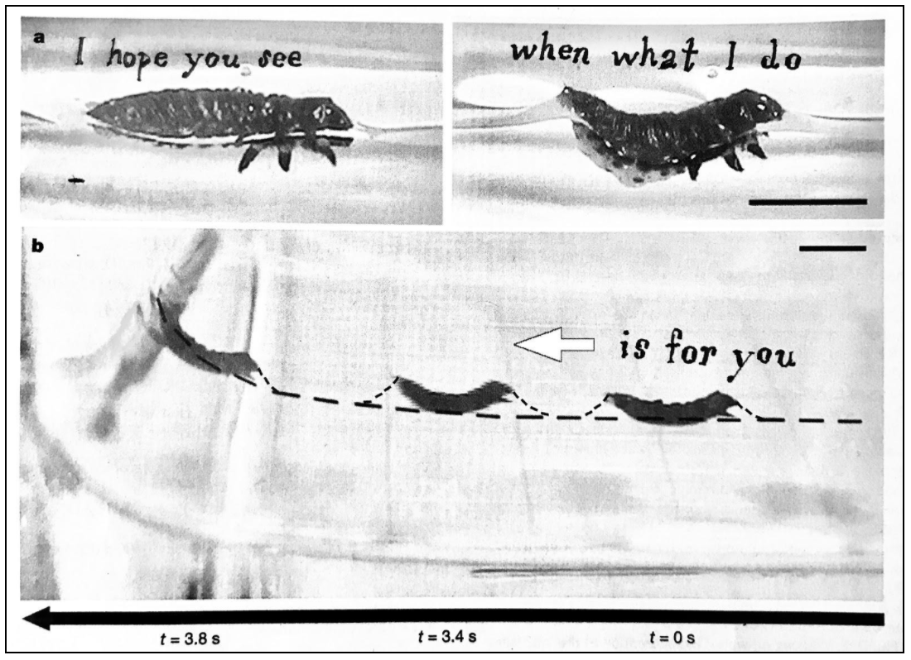

Who do you make work for? 1. Think of them 2. Make work 3. Think of them while you make work a. They don’t have to know it’s for them i. Although sometimes you may want them to ii.  1. When you want them to a. Rethink b. Why you want them to 4. Dissolve all expectations of reciprocation 5. Give to make 6. Make to do 7. Do to be